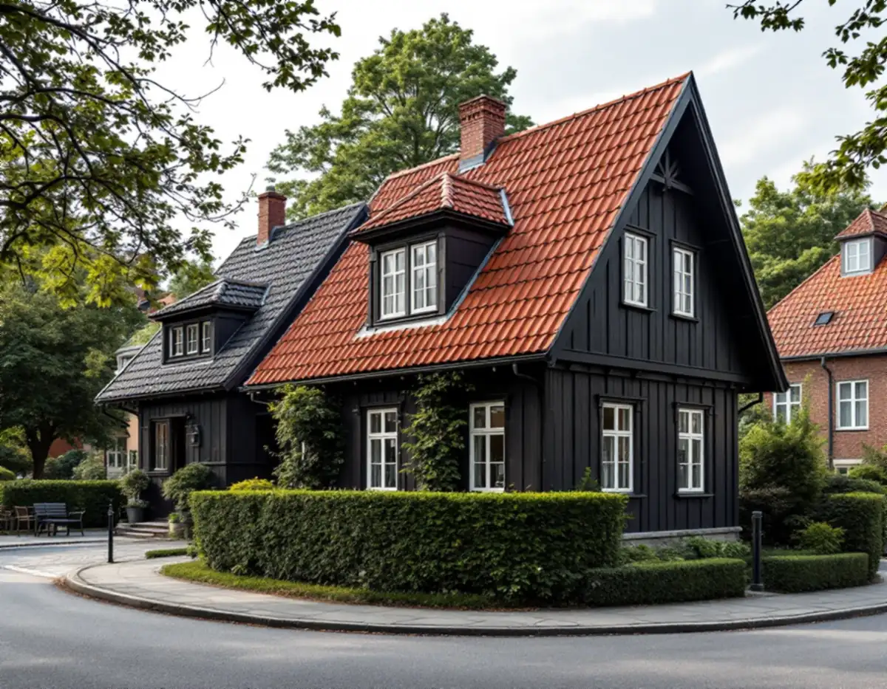
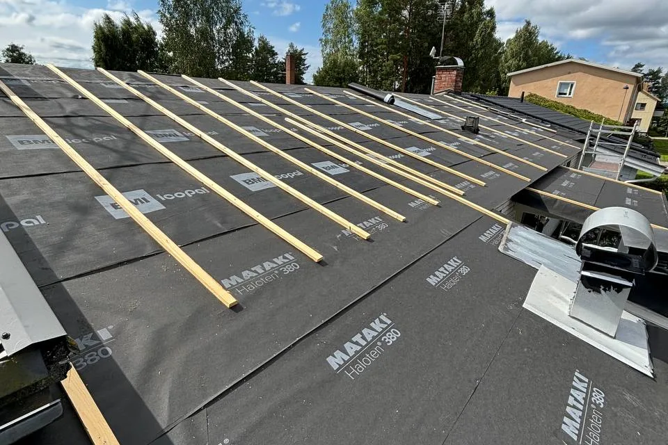
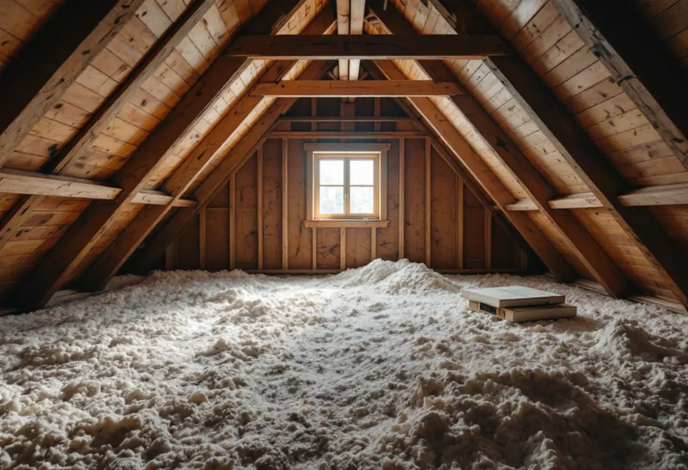

Kartan och planen
Riksintresse, klassning och detaljplan kontrolleras för fastigheten.
När taket på ett hus i Gamla Enskede ska bytas är det lätt att bara tänka på pannorna. Men i riksintresset räknas också takets lutning, höjd och proportioner, och just de kan ändras om taket byggs upp tjockare än förut. Geal Entreprenad AB byter tak på villor och radhus i Enskede och planerar bytet så att husets form står kvar.

Gamla Enskede började byggas 1908 som Stockholms första trädgårdsstad och är riksintresse för kulturmiljövården (AB 112). I stadens beskrivning av riksintresset räknas bebyggelsens enhetliga utformning vad gäller proportioner, takfall samt tak- och fasadmaterial upp som ett värdebärande karaktärsdrag. De enskilda husens detaljer skapar variationen, men formen och materialen håller ihop gatan.
Staden skriver också att det nästan undantagslöst är olämpligt att bygga på ett hus med en våning till vid en gata som i övrigt präglas av lägre hus, och att tillbyggnader i första hand bör göras mot gården. För ett takbyte betyder det att taket helst ska se ut som förut från gatan, även när allt under pannorna är nytt.

Många ägare vill passa på att isolera när taket ändå är av. Läggs isoleringen ovanpå råsponten höjs takfoten och nocken, och vindskivor och takutsprång får en annan dimension. Boverket nämner form, storlek och proportioner bland de egenskaper som ger en byggnad dess karaktär, och en ändring som påverkar dem kan kräva bygglov som fasadändring.
Boverket definierar dessutom en tillbyggnad som en ändring som ökar byggnadens volym, och en sådan åtgärd prövas då som tillbyggnad och inte som fasadändring. Vill du isolera bättre går vi därför igenom om det kan göras inifrån, från vinden, så att takets yttre mått blir desamma. Om det inte går tar vi med frågan till staden innan arbetet planeras.
Stadens strategi för småhusområden, Varsam, har en tabell över områdena. Där är Gamla Enskede markerat som riksintresse, kulturhistoriskt värdefull miljö, område med äldre miljöprogram och område med generösa byggrätter. Enskededalen är markerat som kulturhistoriskt värdefull miljö med äldre miljöprogram, och Enskede gård som kulturhistoriskt värdefull miljö.
Enskedefältet finns i samma tabell som småstugeområde, också det kulturhistoriskt värdefullt och med äldre miljöprogram. Stockholms stad påpekar att utökad lovplikt gäller i särskilt kulturhistoriskt värdefulla områden och att Stadsmuseets klassificeringskarta ger en första indikation. Vi tittar på kartan för din fastighet innan materialet bestäms.
Boverket skiljer mellan att byta till ett annat taktäckningsmaterial, som räknas som fasadändring, och att lägga samma material och utförande igen, som räknas som underhåll. Ett takbyte där rött lertegel ersätts med rött lertegel i samma utförande är alltså underhåll, och det är också det säkraste valet i en miljö där takmaterialet är ett av karaktärsdragen.
Om ditt tak redan har bytts till ett annat material en gång kan det finnas skäl att gå tillbaka till originalet. Staden skriver att det är av stort värde när kraftigt förändrade byggnader kan återställas så att de smälter in bättre i stadsmiljön. Om tegeltyper och de olika hustyperna i Enskede kan du läsa under takrenovering i Enskede.
Innan det gamla taket rivs mäter och fotograferar vi takfot, vindskivor, nock och plåtdetaljer, så att samma mått och profiler kan läggas tillbaka. Det är ofta vid takfoten som ett nytt tak syns från gatan, och därför ägnar vi den detaljen extra tid.
Under pannorna ser vi över läkt, underlagstäckning och råspont, och skadat trä byts innan det nya taket läggs. Om tjänsten i stort kan du läsa under takbyte.

Riksintresse, klassning och detaljplan kontrolleras för fastigheten.
Takfall, takfot, vindskivor och nuvarande material går vi igenom.
Vi bedömer om isoleringen kan läggas inifrån utan att takets mått ändras.
Material, underlag och plåtarbeten redovisas var för sig.
Gammalt tak rivs, underlaget ses över och nytt tak läggs med samma profiler.
Vi går igenom taket och detaljerna med dig.
Skatteverket räknar byte och reparation av takpannor och hängrännor på ett småhus som rotarbete, när du äger och bor i huset eller har det som fritidshus.
Avdraget är högst 30 procent av arbetskostnaden, högst 50 000 kronor per person och år och högst 75 000 kronor tillsammans med rutavdrag. Material och resor ger inget avdrag. Geal drar avdraget direkt på fakturan.
Takets yta och lutning, val av tegel, hur mycket underlag som behöver bytas, takfotens detaljer och om isoleringen ska förbättras inifrån. En överblick finns i vad kostar ett takbyte. Efter ett gratis platsbesök får du ett skriftligt kostnadsförslag.
Byte av tegel-, betong- och plåttak.
Takbyte →Takbyte, takbesiktning och plåtarbeten.
Takläggare i Enskede →Trädgårdsstad med lertegel.
Takrenovering i Enskede →Trädgårdsstaden, kartan och lovet.
Attefallshus i Enskede →Typhus i trä, träbjälklag och bostadsrätt.
Badrumsrenovering i Enskede →Byggplatsen, gatan och träden.
Byggföretag i Enskede →Trädgårdsstadens kulörer.
Fasadmålning i Enskede →Trähus, putsade typhus och småstugor i Enskede.
Fasadrenovering i Enskede →Fönster i riksintresset.
Fönsterbyte i Enskede →Trädgårdsstadens fönster.
Fönsterrenovering i Enskede →Lut, såpa och olja på fur och gran.
Golvläggare i Enskede →Slipa fram gamla brädgolv i villan.
Golvslipning i Enskede →Typhus, dubbelhus och småstugor.
Köksrenovering i Enskede →Trädgårdsstad, egnahem och småstugor i Enskede.
Målare i Enskede →Snörasskydd, rännor och verandaplåt i Enskede.
Plåtslagare i Enskede →Verandor, entréer och bodar i trädgårdsstaden.
Snickare i Enskede →Tapet i vindsrum och snedtak.
Tapetsering i Enskede →Små tomter och riksintresse.
Tillbyggnad i Enskede →Renovera innan ni flyttar in.
Totalrenovering i Enskede →